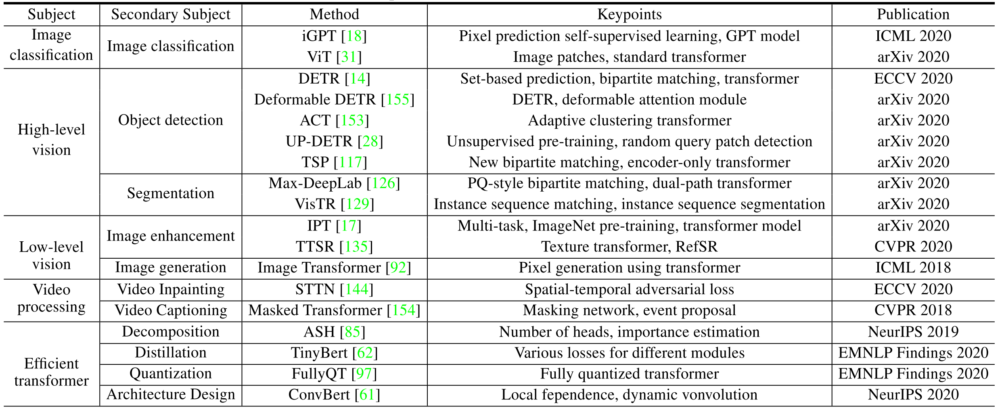
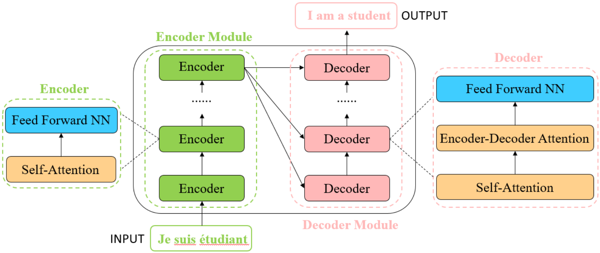
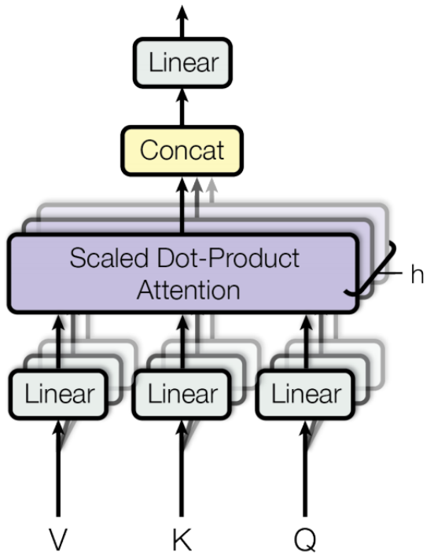

A Survey on Visual Transformer¶
Transformer is originally applied on natural language processing (NLP) tasks and brings in significant improvement [1, 2, 3]. Inspired by the power of transformer in NLP, recently researchers extend transformer for computer vision (CV) tasks.
In this paper, the authors provide a literature review of these visual transformer models by categorizing them in different tasks and analyze the advantages and disadvantages of these methods. The table below lists the representative works of visual transformers.
{kind=link}
Formulation of Transformer¶
As shown in the figure below, transformer consists of an encoder module and a decoder module with several encoders/decoders of the same architecture. Each encoder is composed of a self-attention layer and a feed-forward neural network, while each decoder is composed of a self-attention layer, an encoder-decoder attention layer and a feed-forward neural network. Before feeding into the transformer, each "word" is embedded into a vector with \(d_{model} = 512\) dimensions.
{kind=link}
Self-Attention Layer¶
In self-attention layer, the input vector is firstly transformed into three different vectors, the query vector \(q\), the key vector \(k\), and the value vector \(v\) with the same dimension \(d_q = d_k = d_v = d_{model} = 512\). Vectors derived from different inputs are then packed together into three different matrices, \(Q\), \(K\), and \(V\). As shown in the figure below, the attention function between different input vectors is calculated with the following steps:
Step 1: Compute scores between input vectors: \(S = Q \cdot K^\top\). The score is to determine the degree of attention we put on other words when encoding the current word.
Step 2: Normalize the scores for the stability of gradient with \(S_n = S / \sqrt{d_k}\).
Step 3: Translate the scores into probabilities with softmax function \(P = softmax(S_n)\).
Step 4: Get the weighted value matrix with \(Z = V \cdot P\).
The process can be formulated as:
{kind=link}
To capture the positional information of each word, a positional encoding with dimension \(d_{model}\) is added to the original input embedding:
where \(i\) is the current dimension of the positional encoding.
Multi-Head Attention¶
A single-head self-attention layer limits the ability of focusing on several specific positions while does not influence the attention on other positions that is equally important at the same time. Multi-head attention is added to boost the performance of the vanilla self-attention layer.
Given an input vector and the number of heads \(h\), the input vector is firstly transformed into three different groups of vectors, the query group, the key group, and the value group. There are \(h\) vectors in each group with dimension \(d_{q'} = d_{k'} = d_{v'} = d_{model}/h\). By packing them into groups of matrices, \(\{Q_i}_{i=1}^h\), \(\{K_i\}_{i=1}^h\), and \(\{V_i\}_{i=1}^h\), the process of multi-head attention is as follows:
where \(W^0 \in \mathbb{R}^{d_{model} \times d_{model}}\) is the linear projection matrix.
{kind=link}
Residual in the Encoder and Decoder¶
A residual connection is added in each sub-layer in the encoder and decoder in order to strengthen the flow of information and get a better performance. A layer normalization [4] is followed afterward:
Feed-Forward Neural Network¶
A feed-forward NN is applied after the self-attention layers in each encoder and decoder, denoted as
where \(\sigma\) is the ReLU activation and the hidden layer dimension is 2048.
Final Layer in Decoder¶
The final layer turns the stack of vectors back into a word. This is achieved by a linear layer followed by a softmax layer.
Visual Transformer: Image Classification¶
iGPT¶
This approach consists of a pre-training stage followed by a fine-tuning stage.
Given an unlabeled dataset \(X\) consisting of high dimensional data \(x = \{x_1, \dots, x_n\}\), they train the model by minimizing the negative log-likelihood of the data:
where \(p(x)\) is the density of the data of images, which can be modeled by
where the identity permutation \(\pi_i = i\) is adopted for \(1 \leq i \leq n\), known as the raster order.
References¶
[1] Vaswani, A., Shazeer, N., Parmar, N., Uszkoreit, J., Jones, L., Gomez, A. N., ... & Polosukhin, I. (2017). Attention is all you need. In Advances in neural information processing systems (pp. 5998-6008).
[2] Devlin, J., Chang, M. W., Lee, K., & Toutanova, K. (2018). Bert: Pre-training of deep bidirectional transformers for language understanding. arXiv preprint arXiv:1810.04805.
[3] Brown, T. B., Mann, B., Ryder, N., Subbiah, M., Kaplan, J., Dhariwal, P., ... & Amodei, D. (2020). Language models are few-shot learners. arXiv preprint arXiv:2005.14165.
[4] Ba, J. L., Kiros, J. R., & Hinton, G. E. (2016). Layer normalization. arXiv preprint arXiv:1607.06450.
[5] Chen, M., Radford, A., Child, R., Wu, J., Jun, H., Luan, D., & Sutskever, I. (2020, November). Generative pretraining from pixels. In International Conference on Machine Learning (pp. 1691-1703). PMLR.